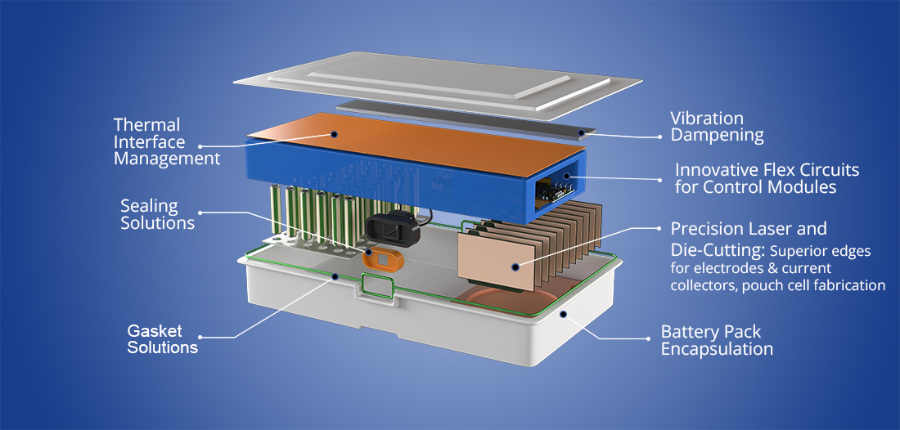
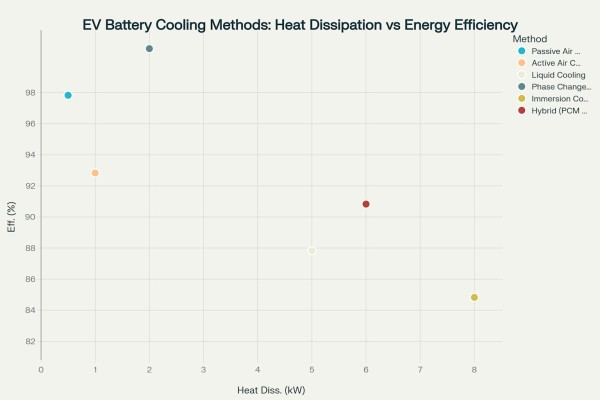
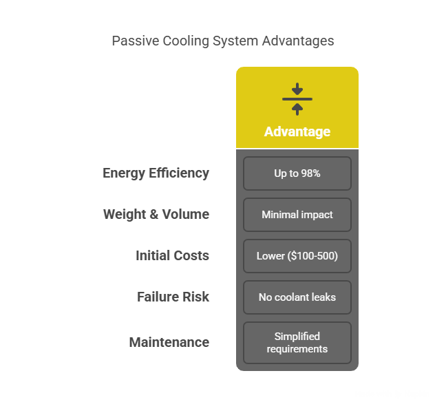
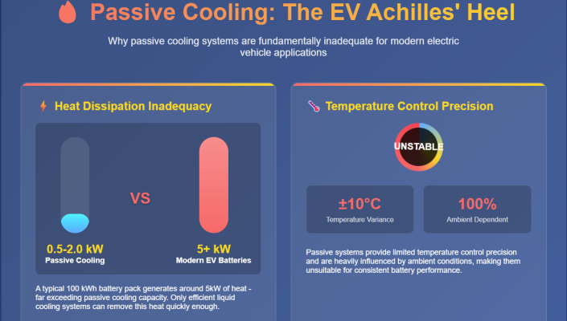
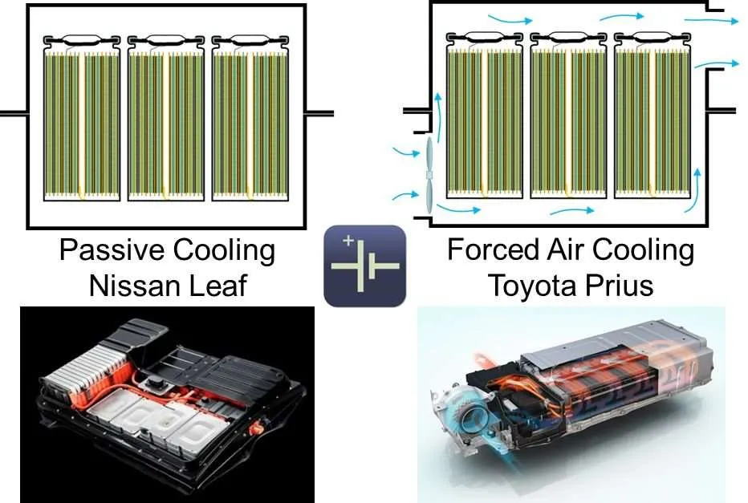
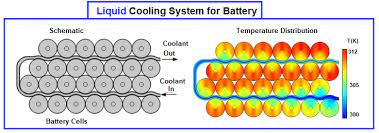
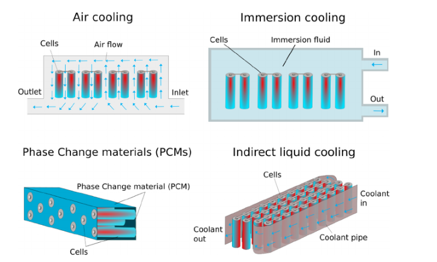
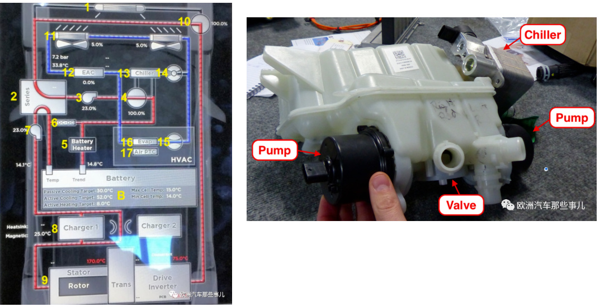
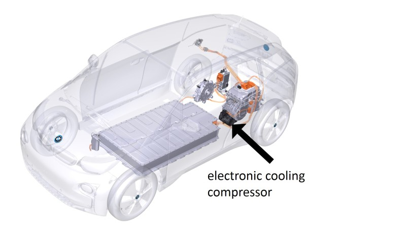
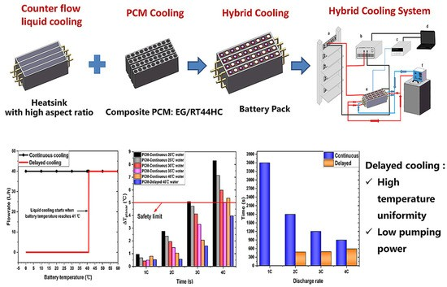

Electric vehicles (EVs) are revolutionizing transportation, but at the heart of every EV is a complex and delicate power source—the battery. While we often focus on range, charging speed, and lifespan, there’s another critical factor that often flies under the radar: thermal management. EV batteries generate a lot of heat, especially during fast charging or high-load operations. Without a solid thermal management system, this heat buildup can degrade performance, shorten battery life, and even pose safety risks.
But why is thermal management so crucial? Batteries operate best within a narrow temperature range—usually between 20°C and 40°C. If the battery gets too hot, the chemical reactions inside speed up uncontrollably, potentially leading to “thermal runaway”—a chain reaction that can result in fire or explosion. On the flip side, if the battery is too cold, its performance drops, charging slows down, and wear increases.
So, keeping your EV battery cool (or warm) isn't just about efficiency; it’s about keeping you safe on the road. Automakers are increasingly investing in advanced battery thermal management systems (BTMS) to make sure EVs stay reliable and safe under all conditions—whether you're in the middle of a desert or driving through a snowstorm.

The Growing Thermal Challenge
Electric vehicle batteries operate optimally within a narrow temperature range of 20°C to 45°C. This constraint becomes particularly challenging as modern EVs demand higher performance, with battery packs generating heat loads exceeding 12kW during rapid charging and experiencing temperature rises of 40-50°C during high-power discharge events.

The consequences of inadequate thermal management are severe. Battery malfunction accounts for 50% of EV fire incidents, with thermal runaway cases increasing from 23 incidents in 2020 to 67 cases in 2024. Recent data from Karnataka, India, shows 83 EV fire incidents over four years, with 65 attributed to power leakages and 13 to battery explosions.
Passive Cooling: Capabilities and Critical Limitations
What Passive Cooling Offers
Passive cooling systems rely on natural heat dissipation through conduction, radiation, and convection without external energy sources. These systems offer several advantages:
- Energy efficiency of up to 98% since no power is consumed for cooling operations
- Minimal weight and volume impact on vehicle design
- Lower initial costs (approximately $100-500 compared to $800-1200 for active systems)
- No risk of coolant leaks or mechanical component failures
- Simplified manufacturing and maintenance requirements

Critical Limitations Revealed
However, passive cooling systems face insurmountable limitations for modern EV applications:
Heat Dissipation Inadequacy: Passive systems can typically handle only 0.5-2.0 kW of heat dissipation, while modern EV batteries generate 5kW or more during normal operation. A typical 100 kWh battery pack can generate around 5kW of heat, which only efficient liquid-cooling systems can remove quickly enough.
Temperature Control Precision: Passive systems provide limited temperature control precision, making them unsuitable for applications requiring consistent battery temperatures. They are influenced by ambient temperature conditions, reducing effectiveness in extreme climates.

Fast Charging Limitations: Passive cooling cannot support the thermal loads generated during fast charging. Modern EVs require charging capabilities of 200-300kW, generating heat loads that passive systems cannot manage.
Safety Concerns: The Nissan Leaf's passive air cooling struggles in extreme temperatures, leading to performance issues and faster battery degradation. This resulted in a recall of nearly 24,000 Leaf vehicles due to overheating battery risks during fast charging.

Active Cooling: The Safety Imperative
Liquid Cooling Dominance
Liquid cooling has emerged as the dominant technology for high-performance EVs. Tesla employs indirect liquid cooling systems that maintain consistent temperatures across battery packs, contributing to the company's reputation for reliable, high-performance EVs. BMW focuses on maintaining uniform temperature distribution across battery packs using liquid cooling systems.

Active cooling systems provide:
- Heat dissipation capacity of 5-8kW, suitable for high-performance applications
- Precise real-time temperature control through sensor networks and sophisticated algorithms
- Extended battery life by reducing thermal stress and limiting degradation rates
- Support for fast charging applications with cooling powers exceeding 20kW
Advanced Cooling Technologies
Immersion Cooling: Emerging as a promising technology, immersion cooling submerges battery cells in electrically non-conductive cooling liquid. This method provides more efficient heat dissipation by directly conditioning heat at the cells, ensuring more even temperature distribution.
Phase Change Materials (PCMs): These materials absorb and release large amounts of latent heat while maintaining relatively constant temperatures. PCM-based hybrid systems can suppress maximum temperatures to 47.6°C even at 45°C ambient temperature.
Hybrid Systems: Combining multiple cooling technologies, hybrid systems achieve 6kW heat dissipation capacity with 88% energy efficiency, balancing performance and efficiency requirements.

The Cost-Safety Trade-off
Economic Considerations
The global battery thermal management system market was valued at $3.2 billion in 2023 and is projected to reach $7.3 billion by 2030. However, high initial costs in developing and implementing advanced BTMS present significant barriers, particularly for small and medium-sized manufacturers.
Active cooling systems require:
- Higher initial investment ($800-1200 vs. $100-500 for passive systems)
- Additional energy consumption for pumps, fans, and control systems
- Increased system complexity with more potential failure points
- Greater weight and space requirements
Safety Cannot Be Compromised
Despite higher costs, the safety imperative is clear. Thermal runaway occurs when battery cell temperatures reach 150-200°C, leading to chemical reactions that produce flammable gases and can cause fires or explosions. Prevention requires maintaining cell temperatures below thermal runaway thresholds, which passive cooling cannot guarantee under high-load conditions.
Industry Response and Future Directions
Regulatory Pressure
Government regulators continue to demand stringent safety measures from manufacturers. The U.S. National Highway Traffic Safety Administration (NHTSA) has opened investigations into EV fire risks, while more regulations are expected as thermal runaway concerns grow.
Technological Innovations
Leading manufacturers are investing heavily in advanced thermal management:
- Tesla's thermal management systems handle heat loads exceeding 12kW with integrated heat exchanger designs and predictive thermal conditioning.

- BMW seeks quiet cooling technologies for fast charging applications, requiring cooling power >20kW while maintaining noise levels below 35 dB(A).
- IoT integration into BTMS enables real-time monitoring, predictive maintenance, and enhanced performance optimization.

Emerging Solutions
Multi-mode cooling approaches are being developed that combine:
- Passive PCM cooling for normal operation
- Active liquid cooling for high-demand scenarios
- Emergency thermal management systems for containment of thermal events

Recommendations for the Industry
For EV Manufacturers
- Abandon passive-only cooling strategies for mainstream EV applications
- Invest in hybrid thermal management systems that combine passive and active cooling
- Implement comprehensive thermal monitoring with IoT-enabled predictive maintenance
- Design for thermal safety from the ground up, not as an afterthought
For Consumers
- Prioritize vehicles with active thermal management when purchasing EVs
- Understand the limitations of vehicles with passive cooling systems
- Avoid fast charging with vehicles using passive cooling (as demonstrated by Nissan Leaf recalls)
For Policymakers
- Establish mandatory thermal management standards for EV safety certification
- Incentivize advanced cooling technology development through research grants
- Require transparent disclosure of cooling system capabilities to consumers
Conclusion
The evidence overwhelmingly demonstrates that passive cooling is insufficient for ensuring EV safety in modern applications. While passive systems offer cost and simplicity advantages, they cannot meet the thermal demands of high-performance electric vehicles, fast charging requirements, or safety standards necessary for mass market adoption.